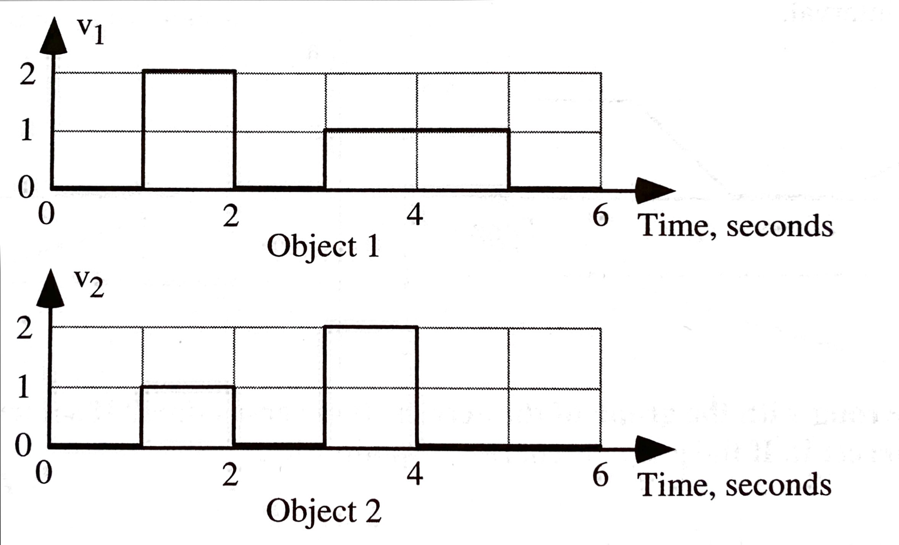
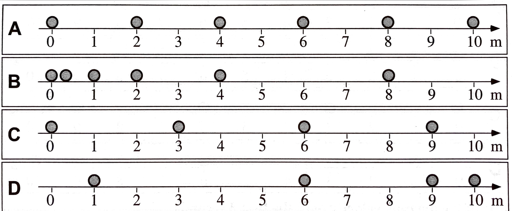

layout: true <div class="my-header"><img src="images/scsdLogo.png" style="height: 70px;"/></div> --- ##.gray[2021.10.21] .blue[Regents Physics] .red[Agenda] .qotd[❓of the 📅: Taco 🌮 Tuesday -- Hard or soft shells? What do you top your tacos with?] 1. How far during "LOL" 2. Physics Equations HW: - Quiz Monday - VT Graphs & Word Problems --- ###.gray[2021.10.18] .blue[AP Physics] .red[Do Now] .left-column[The position-time graph shown represents the motion of two children, Ariel and Byron, who are moving along a narrow, straight hallway. .center[<img src="images/Byronariel.jpg" width = "300 px"/>] **Complete this on your own in your notebook. Then compare with your table once *everyone* is finished.** ] .right-column[1. Do either of the children ever change direction? If so when does this happen? Explain your reasoning. 2. Are the two children ever at the same position along the hallway? If so when does this happen? Explain your reasoning. 3. Do the two children ever have the same speed? If so when does this happen? Explain your reasoning. 4. Doo the two children ever have the same acceleration? If so when does this happen? Explain your reasoning.] --- ##.gray[2021.10.18] .blue[AP Physics] .red[Agenda] .qotd[❓of the 📅: Cats 🐈 or dogs 🐕?] 1. Do Now 2. VT Graphs - Finish Porter Packet 2.3 3. Solving Problems with VT Graphs --- .gray[**2021.10.15**] .blue[**Regents Physics] - .red[DO NOW**] A motion sensor is used to create the graph of a student’s horizontal velocity as a function of time as the student moves toward and away from the sensor, as shown above. The positive direction is defined as the direction away from the sensor. .left-column[.center[<img src="https://assets.learnosity.com/organisations/537/VH922720.g02.png" width = "500 px"/>] ] .right-column[Which of the following describes the student’s final position `\(x_f\)` in relation to the starting position `\(x_0\)` and the student’s average horizontal acceleration ax between 0.0 s and 3.0s ? 1. Position `\(x_f\)` is farther away from the sensor than `\(x_0\)` , and `\(a_x\)` is positive. 2. Position `\(x_f\)` is farther away from the sensor than `\(x_0\)` , and `\(a_x\)` is negative. 3. Position `\(x_f\)` is closer to the sensor than `\(x_0\)` , and `\(a_x\)` is positive. 4. Position `\(x_f\)` is closer to the sensor than `\(x_0\)` , and `\(a_x\)` is negative. ] --- ##.gray[2021.10.14] .blue[AP Physics] .red[Agenda] .qotd[❓of the 📅: Would you rather be a dragon or own a dragon? 🐲🐉] 1. Do Now 2. Finish Up Linearization Lab - Writing the Equations Review - Linearizing our XT Graph from Changing Speed Lab 3. Porter Packet 2.3 4. Problem-Solving with VT Graphs --- #.gray[2021.10.13] .blue[Regents Physics] .red[Agenda] .qotd[❓of the 📅: If aliens 👽 do exist, would you want to meet them?] 1. Finish Stations Labs 2. Linearizing - What is it? - Why do we do it? 3. Linearize your graphs, write equation, share 4. Linearize XT Graph from old pivot --- #.gray[2021.10.12] .blue[Regents Physics] .red[Agenda] .qotd[❓of the 📅: Who is the most competitive person you know?] 1. Stations Lab --- #.gray[2021.10.08] .blue[Regents Physics] .red[Agenda] .qotd[❓of the 📅: What are you best at fixing?] 1. 2.1 Accelerated Motion Representations 1. Check answers with simulation 2. Try Simulation Challenges 2. Finish Area Worksheet - Whiteboard Face off 3. Problem-solving with VT Graphs --- ##.gray[2021.10.06] .blue[Regents Physics] .red[Do Now] The graphs below show the velocity of two objects during the same time interval. .center[] **For the 6-second time interval shown, is the displacement of Object 1 in the upper graph (i) *greater than*, (ii) *equal to*, or (iii) *less than* the displacement of Object 2 in the lower graph? Explain your reasoning.** --- #.gray[2021.10.06] .blue[Regents Physics] .red[Agenda] .qotd[❓of the 📅: What is your favorite month?] 1. Do Now 2. Porter Packet 1.5 (page 15 & 16) 3. Porter Packet 2.3 VT Graphs Changing Velocity --- #.gray[2021.10.05] .blue[Regents Physics] .red[Agenda] .qotd[❓of the 📅: What weird quirks did you pick up from your parents?] 1. Quiz - Do it - Scan it into Canvas (as a PDF if you can, but if you don't know how just use the regular canvas scan option) - Turn in hard copy 2. Speed dating with 2.2 Stacks of Graphs 3. 2.1 with lab groups -- check with online version 4. Graphs and Tracks Challenges --- #.gray[2021.10.04] .blue[Regents Physics] .red[Agenda] .qotd[❓of the 📅: You can have an unlimited supply of one thing for the rest of your life, what is it? Sushi? Scotch Tape? [Don't say money...that's boring]] 1. Do Now: Practice Quiz 2. Card Sort - organize your cards in a logical way (note there is no one way to do this) 3. Gallery walk - look at other groups representations, leave comments on whiteboards 4. Discuss card sort quickly 5. Porter Packet: 1. 2.1 Accelerated Motion Representations 2. 2.2 Stacks of Graphs **HW** - Quiz Tomorrow (same format as practice quiz) --- #.gray[2021.09.30] .blue[Regents Physics] .red[Agenda] .qotd[❓of the 📅: Hanging out by a camp fire, bonfire, or fireplace?] 1. Whiteboard position vs. time data - From this data: *does your fan cart increase its speed constantly?* How do you know? 2. Making VT Graphs from your XT Data 3. Whiteboard VT Graph & Board Meeting - Making sense of it all --- #.gray[2021.09.29] .blue[Regents Physics] .red[Agenda] .qotd[❓of the 📅: You ***have*** to sing karaoke, what song do you pick?] 1. Finish Carts and Ramps Discussion 2. Fan Cart Lab - does it change velocity constantly? 1. Video upload to answer the question --- #.gray[2021.09.28] .blue[Regents Physics] .red[Agenda] .qotd[❓of the 📅: You ***have*** to sing karaoke, what song do you pick?] 1. Finish Dueling Buggies? 2. New Lab Groups 3. Card Sort and Carts and Ramps --- ##.gray[2021.09.24] .blue[Regents Physics] .red[Do Now] In each case, a sphere is moving from left to right next to a tape marked in meters. A strobe (flash) photograph is taken every second, and the location of the sphere is recorded. The total time intervals shown are not the same for all spheres. .center[] 1. Rank the average velocities of the 4 photos. 2. Which ball is speeding up? How do you know? --- #.gray[2021.09.24] .blue[AP Physics] .red[Agenda] .qotd[❓of the 📅: What slang are you really happy went out of fashion?] 1. Do Now 2. Dueling Buggies - Can you predict where your buggies will crash? 1. Collect Data for your cars 2. Buggies go in "jail" while you calculate your prediction based on the distance they start apart (somewhere between 1.5-3 meters) 3. Test it! --- ##.gray[2021.09.23] .blue[Regents Physics] .red[Do Now] Each graph below shows the position of an object as a function of time. .center[<img src="images/Xtrank.jpg" width="1000 px"/> ] **Rank the objects from greatest to least *displacement* from 0 to 4 seconds.** **Rank the objects from greatest to least *distance* from 0 to 4 seconds.** --- #.gray[2021.09.23] .blue[Regents Physics] .red[Agenda] .qotd[❓of the 📅: What is your silliest fear?] 1. Do Now 2. Finish talking about XT Graphs 3. Billiard Ball Race - Pivot HW: - Finish Billiard Ball Race --- #.gray[2021.09.22] .blue[Regents Physics] .red[Agenda] .qotd[❓of the 📅: What household chore do you actually enjoy?] 1. Quiz 2. How Far? 3. Interpreting Position vs. Time graphs --- .center[<img src="images\position-time_1.PNG" width = "450 px"/><img src="images\position-time_2.PNG" width = "450 px"/>] .left-column[.small[Rank these position time graphs from greastest to least in terms of "how far" the object traveled. Top Left (G1): Y-axis: 0-10, X-axis: 0-5, starts at (0,10) goes to (10,0) Top Right (G2): Y-axis: 0-10, X-axis: 0-5, start (0,10), changes at (4,2) and (7,5) end at (10,8) Bottom (G3): Y-axis: 0-10, X-axis: 0-5, starts at (0,5), changes at (2,7), (4,-1), (5,-1) and ends at (7,5)] ].right-column[<img src="images\position-time_3.PNG" width = "450 px"/>] --- #.gray[2021.09.20] .blue[Regents Physics] .red[Agenda] .qotd[❓of the 📅: Would you rather vacation on the beach 🏖️ or adventure in the mountains ⛰️?] 1. What is a motion sensor? 2. Walk the graph lab 3. Whiteboard assigned walk the graph situations & board meeting --- ##.gray[2021.09.17] .blue[Regents Physics] .red[Do Now] .center[<img src="images\position-time_1.PNG" width = "650 px"/>] With your table, draw a picture that represents this motion. --- #.gray[2021.09.16] .blue[Regents Physics] .red[Agenda] .qotd[❓of the 📅: What is your favorite meal to cook and why?] 1. Do Now 2. Motion Maps 3. Practice with multiple representations of motion --- #.gray[2021.09.16] .blue[Regents Physics] .red[Agenda] .qotd[❓of the 📅: Are you more productive at night or in the morning?] 1. Do Now: - look over your lab, and discuss in your group who will be presenting the different parts of it 2. Buggy Lab Board Meeting 3. Writing your Buggy Lab Results 4. Claim-Evidence-Reasoning w/ [Motion](https://mrporterphysics.github.io/Presentations/APCVPM/talks/APCVPM.html#1) Slides --- ##.gray[2021.09.14] .blue[Regents Physics] .red[Do Now] Consider how you could predict the location of your buggy after a set amount of time. What would you need to know? What would you need to measure? How is predicting the **location** different than predicting **how far** the buggy traveled? --- #.gray[2021.09.09] .blue[Regents Physics] .red[Agenda] .qotd[❓of the 📅: What would your superpower be and why?] 1. Do Now Discussion 2. Buggy Lab Part 2 --- #Buggy Lab Part 2 Predicting the ***position*** of your buggy: -- 1. Time should be your **independent variable** (the thing you change/decide) 2. Position should be yoru **dependent variable** (thing you measure as a result of the thing you change/decide) 3. Remember to set up your experiment with your assigned initial conditions --- #.gray[2021.09.13] .blue[Regents Physics] .red[Agenda] .qotd[❓of the 📅: What’s your favorite sandwich and why?] 1. Do now (write down in your notebook or on a scrap piece of paper) - Hand in safety contract - How can you describe and quantify motion? 2. Does it move in a consistent manner? Buggy Lab Part 1 --- #.gray[2021.09.09] .blue[Regents Physics] .red[Agenda] .qotd[**Question of the Day:** Do you have any weird/unique routines or superstitions? (For example: I ***have*** to put on my left sock before my right sock, and the same for shoes, left on first.)] 1. Do Now: Finish taking data on pasta bridge lab 2. Whiteboard results as a group 3. Board Meeting Pasta Bridge Lab: - What does it all mean? 4. Mathematical Modeling --- #Pasta Lab - What does the slope represent? - For every statement: "The < **quantity on vertical axis** > goes up < **slope value with vertical units** > for every 1 < **horizontal unit** > of < **quantity on horizontal axis** >." - What does the intercept mean? --- #The Models... --- #The Models... Math: $$y = mx + b$$ -- Specific Model: $$strength = (7.5\textrm{rocks/strand})strands - 12 \textrm{ rocks}$$ --- #.gray[2021.09.08] .blue[Regents Physics] .red[Do Now] Don't get too comfortable (spoiler...you will be moving) Go to: https://forms.gle/zjAjMq8iPbjqw7MQA or... go to Canvas and click the link in the slides...or... .center[<img src="images/firstdayQR.png" width = "325px"/>] or... go to Canvas and click the link in the slides... --- #.gray[2021.09.08] .blue[Regents Physics] ##.red[Welcome!] .qotd[Question of the Day: Sweet or savory for breakfast?] 1. Fill out questionnaire ✅ & Index Card (Name & Phone Number) 1. Question of the Day 2. Lab Grouping 2. Survival Island 3. Does the 🚗 move in a consistent manner? --- class:center, middle #Question of the Day: #.blue[Sweet or savory for breakfast?] --- #Lab Grouping Arrange yourself into ***logical*** lab groups based on the word on your card. **Rules:** The class must have - 4 Groups of 3 People --- class: center, middle #Why? What connections to physics class? --- #Why? -- - You may feel frustrated as you try to figure physics out. That’s okay. -- - Physics is hard to understand until you know the “rules of the game.” -- - But, once you discover the rules, physics often seems easy and you may be surprised that others don’t understand. -- - However, remember that you didn’t always understand. -- - When you discover the rules and understand without someone just telling you the “answer”, you are excited. -- - The journey to understanding is very important. So, no one is going to tell you the answer, but we’re all here to support each other on our journeys. -- - Being told the “answer” at most gives you one answer that you didn’t know. Learning to think critically and arrive at the answer with support develops a skill that you will use to find many answers. --- class:schodack #Inquiry - make careful observations -- - gather lots of data (need to see more cards) -- - look for patterns, compare and contrast, look for extremes -- - simply the problem being investigated -- - constrain the variables (set number of groups with specific sizing) -- - propose a hypothesis, test it, modify it based on results, repeat --- #Survival Island 🏝️ You and your group are stranded on an deserted island 😮! -- Using *each* of your <u>unique skill's</u> develop a plan to escape the island. -- Whiteboard your response (one person) - remember to remain physically distant when possible -- Be prepared to share out your plan to escape the island as a group. Each of you should offer a part of the plan to the class. --- #Pivot Interactives Create an account...or join our class...or both Go to [pivotinteractives.com](https://app.pivotinteractives.com/join-class?classKey=ck-bc3b5cde) Class Key: .center[#ck-bc3b5cde] --- #🍝 Pasta Bridge Lab How strong is your pasta bridge?